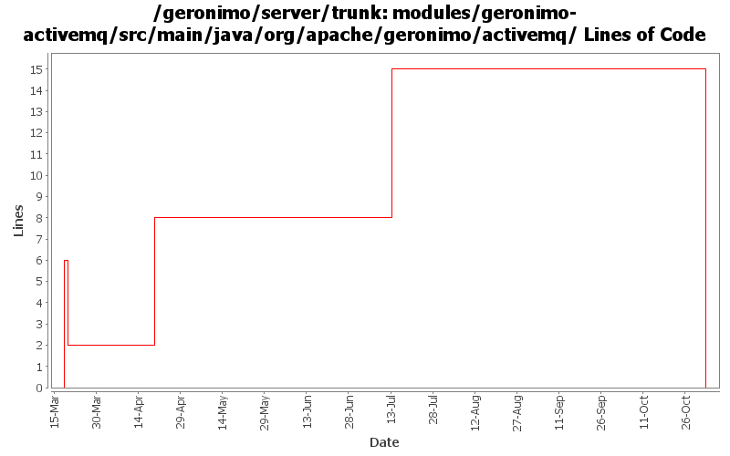

[root]/modules/geronimo-activemq/src/main/java/org/apache/geronimo/activemq
 management
(0 files, 0 lines)
management
(0 files, 0 lines)

| Author | Changes | Lines of Code | Lines per Change |
|---|---|---|---|
| Totals | 16 (100.0%) | 22 (100.0%) | 1.3 |
| vamsic007 | 1 (6.3%) | 8 (36.4%) | 8.0 |
| akulshreshtha | 2 (12.5%) | 7 (31.8%) | 3.5 |
| jdillon | 8 (50.0%) | 6 (27.3%) | 0.7 |
| rickmcguire | 1 (6.3%) | 1 (4.5%) | 1.0 |
| prasad | 4 (25.0%) | 0 (0.0%) | 0.0 |
GERONIMO-3565. Modules distributed amongst framework/modules and plugins
0 lines of code changed in 4 files:
GERONIMO-3320 ActiveMQ MBeans should get registered with MBeanServer created by Geronimo
o Added MBeanServerReference to BrokerServiceGBeanImpl
8 lines of code changed in 1 file:
GERONIMO-3246 Cleanup exception handling so stack traces for first failures are not discarded.
1 lines of code changed in 1 file:
GERONIMO-3011 Do not allow creation of ConnectorServer by activemq broker
6 lines of code changed in 1 file:
Create var/actimemq directory relative to GERONIMO_BASE instead of GERONIMO_HOME
1 lines of code changed in 1 file:
Drop svn:executable prop
0 lines of code changed in 4 files:
r6663@Bliss: jason | 2007-03-18 15:28:48 -0700
Branch for server/trunk re-org
r6664@Bliss: jason | 2007-03-18 15:38:19 -0700
New parent dir
r6665@Bliss: jason | 2007-03-18 15:41:22 -0700
new dir
r6666@Bliss: jason | 2007-03-18 15:48:27 -0700
Repackage amq stuff into org.apache.geronimo.activemq
r6667@Bliss: jason | 2007-03-18 15:57:00 -0700
Rename geronimo-activemq-gbean* modules to geronimo-activemq*
r6668@Bliss: jason | 2007-03-18 16:00:24 -0700
Fixing up packages
r6669@Bliss: jason | 2007-03-18 16:03:31 -0700
Drop gbean package
r6670@Bliss: jason | 2007-03-18 16:52:18 -0700
Update references to new activemq module names
6 lines of code changed in 4 files: